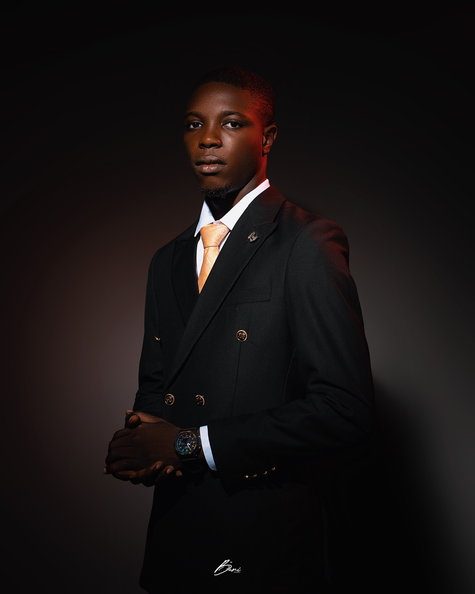

Olukunle Stephen Gbolahan
A professional and personal profile covering my background, education, career interests, creative work and entrepreneurship.
Olukunle Stephen Gbolahan.
Olukunle Stephen Gbolahan is a Human Resource Management graduate, entrepreneur and creative with interests in people, business, technology, creativity and professional development.
His professional interests include Human Resources, administration, employee support, organization, communication and the use of digital tools to improve productivity.
Alongside his professional development, Olukunle is building Stillnotok (SNOK), a fashion and lifestyle brand centered on authenticity, self-expression, resilience and personal growth.

Background & Education
Academic and professional foundations.
Human Resource Management
Studied Human Resource Management at Lagos State University (LASU), developing an academic foundation in people, organizations and workplace practices.
Human Resources
Interested in people-focused roles, administration, employee support, organizational development and professional growth.
Stillnotok
Founder of Stillnotok (SNOK), a fashion and lifestyle brand built around authenticity and self-expression.
Explore More
Explore different parts of my professional and personal journey.
About Me
Learn more about my story, values and background.
Read more →My Journey
Explore the experiences and lessons that shaped my path.
Explore →Career
Explore my professional direction and development.
View career →Projects
See the projects and ideas I am developing.
View projects →Stillnotok
Explore the story behind my fashion and lifestyle brand.
Explore →Connect
Find my professional and social profiles.
Connect →